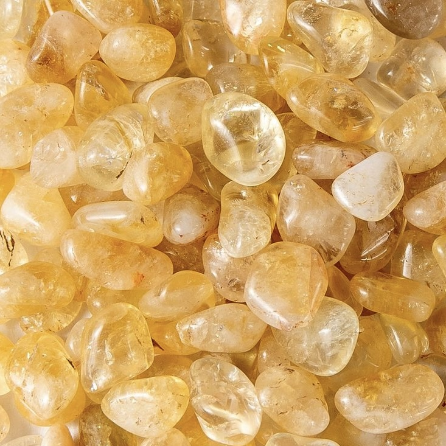

Les propriétés des pierres de votre signe
Bélier: La Jaspe
La pierre de naissance du Bélier est le jaspe. On trouve généralement la pierre de couleur rouge orangé, c'est une pierre très résistante. Associée à la force, à la détermination et à la réussite, la pierre de naissance du Bélier met en valeur le leadership et la détermination. En effet, le jaspe augmente la capacité et la motivation des natifs du signe à atteindre leurs buts et objectifs, en plus d'augmenter la sécurité et la protection dans les situations de conflit.
Taureau: L'Emeraude
L'émeraude est l'une des pierres principales du signe du Taureau. La pierre symbolise la stabilité, le travail et la patience, caractéristiques très présentes dans le profil des Taureaux. C'est une pierre qui enchante par sa beauté. Puissante, l'émeraude aide énergétiquement à la santé et renforce le pouvoir d'accomplissement et de sensualité. La pierre transmet également aux Taureaux une énergie qui éveille des qualités et des capacités particulières, réduisant ainsi la timidité et apaisant les peurs intérieures.
Gémeaux: La Topaze
L’une des pierres les plus liées au signe des Gémeaux est la topaze. Avec un grand pouvoir, la topaze influence l’énergie mentale et le pouvoir créatif des Gémeaux. La pierre apporte des vibrations capables de stimuler des idées nouvelles et importantes. Connue comme la pierre de la chance et de l’équilibre, la topaze aide à organiser les émotions et à avoir de la chance dans les affaires, au travail et dans d’autres défis intellectuels.
Cancer: Le Quartz Vert
Pour le signe du Cancer, la pierre la plus adaptée est le quartz vert. Elle est chargée d’apporter aux Cancers une grande puissance mentale, qui se transforme en direction des idées et en concentration. Étant une excellente pierre de guérison, elle peut également agir sur les maladies physiques et spirituelles, en modifiant les schémas de pensée vibratoires et en aidant principalement à la santé féminine.

Lion: L'Ambre
L'ambre est la pierre principale du signe du Lion. Sa couleur étonnante se démarque et peut être associée à la beauté et à l'exubérance du Lion. Très utilisée par les prêtres, les magiciens et les rois au Moyen Âge, l’ambre est capable d’éliminer les énergies négatives les plus diverses. Utilisée comme porte-bonheur, la pierre du Lion contribue à la sécurité personnelle et protège également contre les énergies négatives, l'envie et l'avidité.
Vierge: L'Onyx
L'Onyx possède un grand pouvoir de protection et de guérison énergétique. Utilisé pour équilibrer les énergies Yin et Yang, il améliore l'estime de soi et la sécurité. Les Vierges, connues pour leurs grandes capacités d'observation, utilisent l'onyx comme source importante pour canaliser leurs énergies et établir des relations supérieures pour atteindre leurs objectifs.
Balance: La Citrine
Connues pour leur esprit de justice, les Balances ont la citrine comme pierre principale. La pierre du zodiaque peut être considérée comme une source importante d’énergie vitale, capable de favoriser la revitalisation à différents niveaux de la vie. La citrine donne aux Balances la capacité de devenir des personnes plus sûres et plus centrées avec une forte attirance personnelle. Elle est toujours considérée comme une source de prospérité, car elle émet une vibration lumineuse et dorée qui symbolise l’abondance.

Scorpion: L'Opale
Propriétaire d'une couleur enivrante, l'opale a tout à voir avec le profil du Scorpion. Considérée comme la pierre principale du signe du Scorpion, la pierre possède une énergie puissante capable de développer l'intuition et la confiance en soi. La pierre aide les Scorpions principalement à résoudre leurs problèmes personnels et professionnels, fonctionnant comme une puissante source de protection.
Sagittaire: L'Améthyste
La pierre de naissance du Sagittaire est sans aucun doute l’une des plus belles pierres de la nature. Propriétaire d’une énergie vitale très intense, l’améthyste est puissante contre les énergies et sentiments négatifs. Célèbres pour leur amour de la liberté, les Sagittaires voient leur côté créatif dynamisé et renforcé par les vibrations de l’améthyste. C'est une pierre de protection, de vitalité et d'intuition, qui aide avec énergie à mener à bien des projets à fort impact.
Capricorne: Le Saphir
Très obstinées et motivées à conquérir ce qu'elles veulent, les femmes Capricorne ont le saphir comme pierre de naissance. Belle pierre de couleur bleue, elle a la capacité de purifier, d'amplifier et de transmettre de bonnes énergies à toutes les personnes de ce signe. Le saphir aide les Capricornes à trouver un équilibre émotionnel, physique et mental, ce qui en fait des personnes encore plus motivées à atteindre leurs objectifs de manière efficace et paisible.
Verseau: La Turquoise
Considérée comme une pierre sacrée depuis l'Antiquité, la turquoise est la pierre qui influence le plus les personnes du signe du Verseau. Source de joie, elle est capable de fournir encore plus de volonté aux Verseaux. La turquoise est une alliée importante pour augmenter la capacité de communication des personnes de ce signe. Elle aide également à la capacité créative et aux pensées inspirantes.
Poisson: L'Aigue-Marine
L'aigue-marine est une source d'énergies supérieures, qui contribue à développer les dons naturels. Propriétaire d’une teinte bleue magique, l’aigue-marine émet une forte énergie liée au ciel et à la mer. La pierre permet aux Poissons de développer davantage leur capacité à aider les gens, en plus de travailler sur la sérénité et le côté émotionnel, gouverné par les eaux.